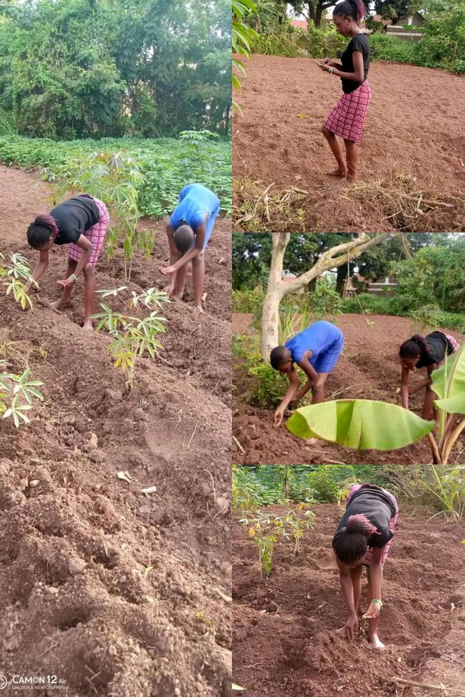

Farming is my hobby for sure.it bring me to God's nature. i plant carrots,Beans,on this mother earth. i enjoy treamedously i like from my heart. Ifeel naturally attached to the world of nature. we have aspecioushalf an acre farm house as such, ihave been able to concentrate on my garden.
This is the photo of farming
